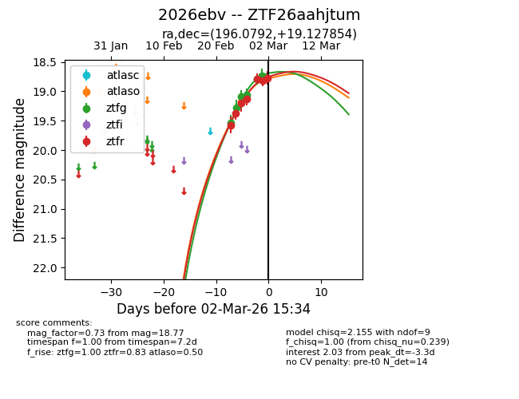
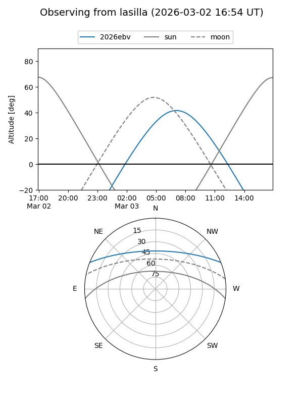
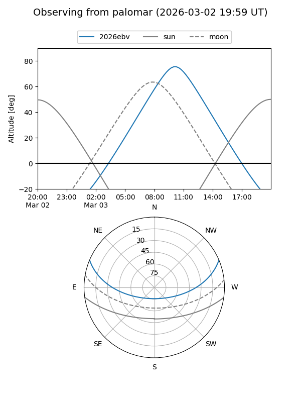
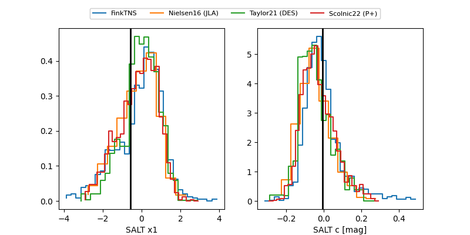

2026ebv
Target 2026ebv at 2026-03-02 15:39
Aliases and brokers:
FINK: link
Lasair: link
ALeRCE: link
TNS: link
YSE: link
alt names
ZTF26aahjtum (ztf,fink_ztf)
2026ebv (tns,yse)
Coordinates:
equatorial (ra, dec) = 196.0792,+19.12785
equatorial (HMS+DMS) = 13:04:19.01,+19:07:40.27
galactic (l, b) = (323.8956,+81.47057)
Flags:
Photometry:
last atlaso=19.18, ztfg=18.74, ztfr=18.77
1 atlaso, 6 ztfg, 7 ztfr detections
Lightcurve

Visibility


Additional plots
